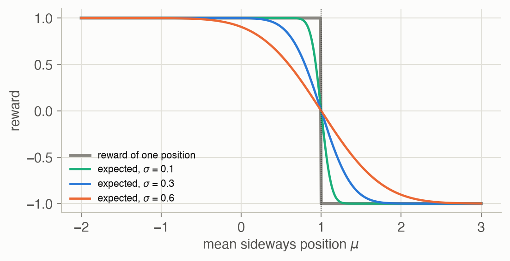
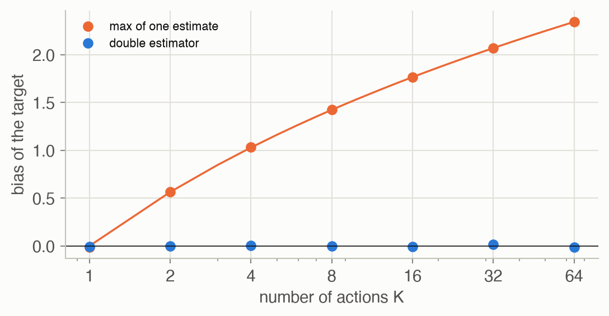

Week 4 · Reinforcement Learning I
Lecture of 9 March 2026 · guest: Aviral Kumar
Big picture
Where this week fits
Imitation learning (Week 3) copies an expert, so it can never do better than the expert. Reinforcement learning (RL) removes that ceiling: the robot tries things, receives rewards, and improves by trial and error ▶ 01:02. Week 2 defined the goal, the policy with the highest expected discounted return, but not how to find it. This week gives the first family of answers, built on value functions: numbers that say how good it is to be in a state, or to take an action there. Week 5 gives the second family, which improves the policy directly by gradient ascent (policy gradients and actor-critic methods).
The question this week answers: how can a robot work out what to do from rewards alone, first with a model of the world, then without one, and finally with images and continuous actions?
The key ideas at a glance
- Expectations smooth things out. A reward can be a step function (on the road or off the cliff) with no useful gradient, yet its expected value under a stochastic policy changes smoothly with the policy’s parameters. That is why RL can optimize what looks non-differentiable.
- Values and the Bellman equation. The value of a state is the reward now plus the discounted value of where you land next. This one-step recursion replaces waiting until the end of the episode.
- Dynamic programming. With a known model, value iteration applies the Bellman optimality update until the values stop changing; policy iteration alternates exact evaluation and greedy improvement. Both converge to the optimal policy.
- Q-functions and Q-learning. Storing a value per state and action lets a robot act without a model: pick the action with the highest Q. Q-learning learns Q from sampled transitions, and because its target uses the best next action it can learn from any data (off-policy); SARSA learns the value of the exploring policy itself (on-policy).
- Deep Q-learning. DQN replaces the table with a convolutional network and stabilizes it with a replay buffer and a target network. Taking a maximum over noisy estimates overestimates values; Double DQN fixes it.
- Continuous actions. The maximum over actions is no longer a lookup. Options: discretize cleverly (pixels as actions), search with sampling or the cross-entropy method (QT-Opt), or learn the argmax with an actor network (DDPG).
Vocabulary
| Term | Plain meaning |
|---|---|
| Value function \(V^\pi(s)\) | Expected discounted return from state \(s\) when following \(\pi\) |
| Q-function \(Q^\pi(s, a)\) | Expected discounted return after taking action \(a\) in \(s\), then following \(\pi\) |
| Bellman equation | Value now = reward now + discounted value next |
| Bootstrapping | Updating an estimate using another estimate (the next state’s value) |
| Dynamic programming | Solving the Bellman equations with a known model, by repeated sweeps |
| Model-free | Learning from sampled experience, with no transition model |
| TD target | The one-sample estimate \(r + \gamma \cdot(\text{value of next state})\) that an update moves towards |
| On-policy, off-policy | Learning the value of the policy that collects the data, or of another one |
| Replay buffer | A store of past transitions, sampled at random for training |
| Target network | A slowly updated copy of the Q-network that computes the TD targets |
| Actor, critic | A network that outputs actions, and one that scores them with Q |
After this week you can
- Explain why the expected reward of a stochastic policy is smooth even when the reward is a step.
- Write the Bellman equations for \(V^\pi\), \(V^*\) and \(Q^*\), and say what value iteration and policy iteration do with them.
- Explain the difference between Q-learning and SARSA, and predict which route each learns along a cliff.
- Name DQN’s two stabilizers and the bias Double DQN removes.
- Compare discretization, sampling (CEM) and an actor network (DDPG) as ways to choose a continuous action.
Intuition
TipAnalogy
Think of learning the way home in a new city without a map. At first you wander. Over time you learn how promising each street corner is: “from here it’s about ten minutes”. Once every corner has such a number, choosing a turn is easy: take the street to the corner with the best number. You never need to plan the whole route; the numbers carry the long-range information. Value functions are those numbers, and the Bellman equation says how a corner’s number relates to its neighbours’: this corner is worth one minute plus the next corner.
A step reward, a smooth objective
The lecture opens with a car on a narrow mountain road: +1 for each step on the road, -1 for falling off the cliff ▶ 03:41. As a function of the car’s position this reward is a step: flat on either side, with a jump at the edge. Its gradient is zero almost everywhere and undefined at the edge, so gradient descent on the reward itself learns nothing ▶ 04:12. RL never optimizes the reward of one action, though; it optimizes the expected reward under a stochastic policy ▶ 05:15. If the car’s position is spread out by the policy’s randomness, the expected reward is the step averaged over that spread: a smooth curve whose slope is never zero ▶ 06:16. In this page’s version, with a spread of 0.6, the slope two units from the edge is still -0.005: small, but it points the right way (Figure 2).

Value: how good is it to be here?
The expected return tells you how good a policy is overall, but to learn from it you would have to run every episode to the end: let the car fall off the cliff before learning that falling is bad ▶ 07:19. The Markov property offers a shortcut. Because the future depends only on the current state, a single number per state can summarize everything ahead: the value \(V^\pi(s)\), the expected return from \(s\) onwards ▶ 08:57. Any return splits into the reward now plus the discounted return from the next state, so values satisfy a one-step recursion, the Bellman equation (Equation 3) ▶ 11:01. Updating a value from the next state’s estimated value, rather than waiting for the real outcome, is called bootstrapping ▶ 11:31.
The optimal value \(V^*(s)\) is the best any policy can achieve from \(s\) ▶ 12:02. Once you have it, acting optimally needs no long-range planning: from each state, take the action whose one-step lookahead is best ▶ 13:05.
Value iteration: the ripple
Value iteration starts with every value at zero and applies the Bellman optimality update to every state, again and again ▶ 14:09. In a grid world with one reward at the goal, the first sweep gives value only to the cells next to the goal; the second to their neighbours; information flows backwards from the goal one step per sweep ▶ 16:13. The update is a contraction, so the values converge ▶ 14:39.
This page’s warehouse grid has a start on the left, a goal on the right, a short route that runs along a row of hazards (-1), and a longer route round the top past some walls. Each move goes the intended way with probability \(1 - p\) and slips sideways otherwise, half to each side; \(p = 0.2\) is the lecture’s 80/10/10. With no slips, the optimal route is the short one: 6 steps. With \(p = 0.2\), a sideways slip on the short route could drop the robot into a hazard, and the optimal policy takes the long way round: 13.5 steps on average, reaching the goal in 99.4% of episodes. The goal’s value reaches the start after 6 sweeps either way. With slips, though, it takes 110 sweeps for the values to settle, against 9 without.
What to watch for. At sweep 1 only the goal’s neighbours turn blue; each sweep adds one more ring of cells, so the colour reaches the start at sweep 6. The cells beside the hazards stay paler than the top row: from there, one slip in ten ends in a hazard. After the jump to the converged values the arrows appear, and the route from the start goes up and round the top. Two arrows in the bottom row point straight into the wall: pushing against the wall means a slip can only go sideways, never up into a hazard. The robot then slips 5 times on its way, 3 of them into a wall or the edge of the grid, where it stays put; each time, the arrow in its new cell points it back onto the route.
Policy iteration: measure, then improve
Policy evaluation answers a simpler question than value iteration: how good is this policy? It uses the same update with the maximum replaced by the policy’s own action ▶ 17:47. Policy iteration alternates: evaluate the current policy exactly, then switch every state to its greedy action under those values ▶ 19:21. Each round can only improve the policy, and there are finitely many policies, so it stops at the optimum, usually after few rounds ▶ 20:56. On the warehouse grid it needs at most 9 rounds for every slip probability tried (Figure 4).
Q-functions: bake the model into the values
Both methods need the transition model, and acting with \(V^*\) needs it too: the greedy step averages over where each action might lead. A robot rarely has such a model, and evaluating it for every candidate action at every control step would be slow ▶ 21:58. The Q-function stores a value per state and action: the expected return after taking \(a\) in \(s\). The averaging over the dynamics is done once, during training, and baked into Q; at test time acting is just “pick the action with the largest Q” ▶ 22:59.
Q-learning: learn from samples
Q-learning removes the model from training as well: instead of averaging over all possible next states, it takes one action, observes one transition, and nudges Q towards the TD target \(r + \gamma \max_{a'} Q(s', a')\) ▶ 25:34. The world becomes its own simulator. The price is data: Q-learning needs many more transitions than dynamic programming needs sweeps ▶ 27:10.
Because the target always uses the best next action, regardless of what the robot actually did next, Q-learning learns the optimal policy’s values from data collected by any policy: random exploration, an old policy, a human. It is off-policy ▶ 28:45. SARSA changes one thing: its target uses the action the robot will actually take next, exploration included. It learns the value of the exploring policy itself (on-policy), and so it is wary of states where its own random moves are dangerous ▶ 29:47.
On a cliff walk, where the shortest route runs along the edge, the difference is visible ▶ 30:51. With 10% random moves, Q-learning’s greedy route runs along the edge in all 20 training runs (11 steps), but while it is still exploring it keeps falling off and averages -40.9 per episode over the last 100 episodes. SARSA’s greedy route runs along the top row, as far from the edge as the grid allows (median 15 steps), and SARSA earns -23.9 per episode while exploring (Figure 5).
Deep Q-learning
Tables do not scale to camera images: an 84 × 84 frame stack has astronomically many possible states ▶ 32:26. DQN replaces the table by a convolutional network that maps frames to one Q-value per action, trained with Q-learning targets ▶ 33:28. With one architecture and one set of hyperparameters it learned 49 Atari games from pixels ▶ 34:02. Two stabilizers made it work. A replay buffer stores transitions and trains on random minibatches, which breaks the correlation between consecutive samples ▶ 35:05. A target network, a slowly updated copy, computes the targets, so an update does not immediately move its own target ▶ 36:08.
One flaw remains: the maximum of noisy estimates is, on average, larger than the maximum of the true values ▶ 37:42. In this page’s toy, with 8 actions whose true values are all 0 and whose estimates carry unit noise, the maximum estimate averages 1.43. Double DQN lets the online network choose the action and the target network score it; with independent errors, the toy’s bias drops to +0.001 ▶ 38:14.
Continuous actions: the max is a search
DQN takes a maximum over a list of actions. A robot arm’s action is a continuous vector, and there is no list to scan ▶ 39:15. The lecture gives three ways out ▶ 39:47:
- Discretize. Ten bins per joint for a 7-joint arm is \(10^7\) actions. Discretizing where it matches the task can work well: the pushing-and-grasping system scores every pixel of a top-down image as a place to push or grasp, and learns by itself to push objects apart before grasping ▶ 41:19.
- Search. Sample candidate actions and keep the best, or refine the samples with the cross-entropy method (CEM): sample, keep the best few, fit a Gaussian to them, repeat ▶ 44:21. CEM can lock onto a lower peak, and its cost is paid at every control step. QT-Opt used it to learn grasping from over 580,000 real grasp attempts ▶ 45:54.
- Learn the argmax. DDPG trains a second network, the actor, to output the action the critic (the Q-network) rates highest; choosing an action becomes one forward pass ▶ 46:56. The actor follows the critic’s gradient with respect to the action, and explores by adding Gaussian noise to its output ▶ 49:00. It is notoriously sensitive to hyperparameters ▶ 50:04.
In this page’s 7-dimensional toy, CEM with 640 evaluations of Q reaches the true peak in 72% of runs and settles on a lower peak in 17%; even 64,000 uniform samples average only 0.91 of the peak’s value 1. Gradient ascent climbs whichever hill it starts on: 58% of random starts reach the top, 40% the lower peak (Figure 8).
Key concepts & formulae
The lecture’s notation: \(V^\pi\) and \(Q^\pi\) for values, \(P(s' \mid s, a)\) for the dynamics, \(r(s, a)\) for the reward, \(\gamma\) for the discount. The ADM book writes \(U^\pi\) for \(V^\pi\) and \(T(s' \mid s, a)\) for the dynamics.
Smoothing by expectation
\[ J(\mu) = \mathbb{E}_{y \sim \mathcal{N}(\mu, \sigma^2)}\big[r(y)\big] = 2\,\Phi\Big(\frac{c - \mu}{\sigma}\Big) - 1 \tag{1}\]
In words. For the step reward (+1 on the road, -1 past the edge at \(c\)), the expected reward is the chance of staying on the road minus the chance of falling off, a smooth function of the policy’s mean.
Term by term.
- \(y\): the car’s sideways position, drawn from the policy.
- \(\mu\), \(\sigma\): the policy’s mean (its parameter) and spread.
- \(\Phi\): the standard normal cumulative distribution, \(P(y < c) = \Phi((c - \mu)/\sigma)\).
- Its derivative, \(-\frac{2}{\sigma}\varphi\big(\frac{c - \mu}{\sigma}\big)\), is negative everywhere: moving away from the edge always helps, a little.
Why it holds. In general \(J(\theta) = \int r(y)\, p_\theta(y)\, dy\): the parameters enter only through the density, which is smooth, so \(J\) is smooth however rough \(r\) is. Week 5’s policy gradient turns this observation into an algorithm.
Value functions and the Bellman equation
\[ \begin{aligned} V^\pi(s) &= \mathbb{E}_\pi\Big[\sum_{t \ge 0} \gamma^t r_t \;\Big|\; s_0 = s\Big] \\ J(\pi) &= \mathbb{E}_{s_0 \sim p(s_0)}\big[V^\pi(s_0)\big] \end{aligned} \tag{2}\]
In words. The value of a state is the expected discounted return when starting there and following \(\pi\). Averaging it over start states gives back Week 2’s objective.
Term by term.
- \(\mathbb{E}_\pi\): over the policy’s choices and the world’s random transitions.
- \(V^\pi\) is a local version of \(J(\pi)\): one number per state instead of one for the whole policy.
\[ \begin{aligned} V^\pi(s) &= \textstyle\sum_a \pi(a \mid s) \big[ r(s, a) + \gamma\, \mathbb{E}_{s'} V^\pi(s') \big] \\ \mathbb{E}_{s'} f(s') &= \textstyle\sum_{s'} P(s' \mid s, a)\, f(s') \end{aligned} \tag{3}\]
In words. A state’s value is the expected reward of this step plus the discounted expected value of the next state.
Term by term.
- \(r(s, a)\): the expected immediate reward.
- \(\mathbb{E}_{s'} V^\pi(s')\): the value of where the action leads, averaged over the dynamics (second line); the rest of this page uses this shorthand.
- For a fixed \(\pi\) this is a linear system: one equation per state.
Why it holds. Split the return: \(G_0 = r_0 + \gamma (r_1 + \gamma r_2 + \dots) = r_0 + \gamma G_1\). Take expectations given \(s_0 = s\); by the Markov property, \(\mathbb{E}[G_1 \mid s_1 = s'] = V^\pi(s')\) whatever happened before.
\[ \begin{aligned} V^*(s) &= \max_a \big[ r(s, a) + \gamma\, \mathbb{E}_{s'} V^*(s') \big] \\ \pi^*(s) &= \text{the maximizing } a \end{aligned} \tag{4}\]
In words. The best achievable value of a state is the best one-step lookahead using the best achievable values of the next states. The optimal policy picks the action that attains that maximum.
Term by term.
- The maximum replaces the policy’s average over actions in Equation 3.
- \(\pi^*\) is greedy with respect to \(V^*\): all long-range reasoning is already inside \(V^*\).
Dynamic programming
\[ \begin{aligned} V_{k+1}(s) &= \max_a \big[ r(s, a) + \gamma\, \mathbb{E}_{s'} V_k(s') \big] \\ \lVert V_{k+1} - V^* \rVert_\infty &\le \gamma\, \lVert V_k - V^* \rVert_\infty \end{aligned} \tag{5}\]
In words. Apply the right-hand side of Equation 4 to the current guess, for every state at once. Each sweep shrinks the largest error by at least a factor \(\gamma\).
Term by term.
- \(V_0 = 0\): start knowing nothing.
- \(\lVert\cdot\rVert_\infty\): the largest error over all states.
- The second line is the contraction property: two value functions get at least \(\gamma\) times closer under one sweep, so the sweeps converge to the unique fixed point \(V^*\).
Numeric check. On the warehouse grid (\(\gamma =\) 0.95), value iteration stops changing by more than \(10^{-8}\) after 9 sweeps without slips and 110 with \(p = 0.2\). Without slips every path to the goal is at most a few steps long, and the values are exact from sweep 8, once the ripple has passed; with slips, a robot can wander, and the error shrinks geometrically instead (Figure 4, left).
\[ \begin{aligned} V^{\pi}_{k+1}(s) &= \textstyle\sum_a \pi(a \mid s) \big[ r(s, a) + \gamma\, \mathbb{E}_{s'} V^{\pi}_k(s') \big] \\ \pi_{i+1}(s) &= \arg\max_a \big[ r(s, a) + \gamma\, \mathbb{E}_{s'} V^{\pi_i}(s') \big] \end{aligned} \tag{6}\]
In words. Policy evaluation repeats the Bellman equation of a fixed policy until it converges to \(V^\pi\). Policy iteration alternates that evaluation with greedy improvement.
Term by term.
- First line: no maximum, so no improvement; it only measures. (It can also be solved directly as a linear system.)
- Second line: the greedy step. If it changes nothing, the policy is optimal.
- Policy improvement theorem: the new policy is at least as good in every state, \(V^{\pi_{i+1}} \ge V^{\pi_i}\).
Numeric check. With \(p = 0.2\), the start state’s value under successive policies is 0.001, 0.028, 0.136, 0.164, 0.227, 0.526, 0.527, 0.527: never decreasing, optimal after 8 rounds.
![Two panels. Left: four curves of maximum error against sweep number on a logarithmic y-axis. The slip-0 curve stays near 1 and then drops to exactly zero at sweep 8, marked by an arrow and label; the other curves decline in straight lines on the log scale, steeper for slip 0.1 than for 0.2 and 0.3, reaching about 1e-8 between 30 and 160 sweeps. Right: four step curves of the start state's value against policy-iteration round, from about 0 up to between 0.47 and 0.77 within 7 to 9 rounds, all non-decreasing.](w04-reinforcement-learning-1_files/figure-html/fig-dp-output-1.png)
Q-functions and model-free learning
\[ \begin{aligned} Q^*(s, a) &= r(s, a) + \gamma\, \mathbb{E}_{s'} \max_{a'} Q^*(s', a') \\ V^*(s) &= \max_a Q^*(s, a) \\ \pi^*(s) &= \arg\max_a Q^*(s, a) \end{aligned} \tag{7}\]
In words. The value of taking \(a\) in \(s\) and acting optimally afterwards. Once known, the optimal action is a lookup, with no model needed.
Term by term.
- The sum over \(s'\) (the dynamics) now sits inside \(Q^*\): it is computed during training, not at decision time.
- One extra input dimension (the action) is the price.
\[ \begin{aligned} y &= r + \gamma \max_{a'} Q(s', a') \qquad \text{(TD target)} \\ Q(s, a) &\leftarrow Q(s, a) + \alpha \big[ y - Q(s, a) \big] \end{aligned} \tag{8}\]
In words. After one real transition \((s, a, r, s')\), move the stored value a fraction \(\alpha\) of the way towards the reward plus the discounted best value of the state actually reached.
Term by term.
- \((s, a, r, s')\): one sampled transition, from any policy.
- The TD target replaces the sum over \(s'\) in Equation 7 by the single \(s'\) that happened. Averaged over many updates, the samples stand in for the expectation.
- \(\max_{a'}\): the target assumes the best next action, whatever the robot did next: off-policy.
- \(\alpha\): the learning rate.
\[ \begin{aligned} y &= r + \gamma\, Q(s', a'), \qquad a' \sim \pi(\cdot \mid s') \\ Q(s, a) &\leftarrow Q(s, a) + \alpha \big[ y - Q(s, a) \big] \end{aligned} \tag{9}\]
In words. The same update, but the target uses the action \(a'\) the robot actually takes next, chosen by its own (exploring) policy.
Term by term.
- The name lists the update’s ingredients: \(s, a, r, s', a'\).
- On-policy: it learns \(Q^\pi\) of the \(\varepsilon\)-greedy policy, mistakes included, not \(Q^*\).
![Two panels. Top: a 4-by-10 grid with a dark band of cliff cells along the bottom row between a start cell at the bottom left and a goal at the bottom right. An orange line goes up one cell from the start, along the row just above the cliff, and down into the goal. A blue line goes up three cells to the top row, along it, and back down three cells to the goal. Bottom: two learning curves of episode return against episode from 0 to 500; both rise from around -100 or below; the blue SARSA curve levels off near -24, the orange Q-learning curve lower, around -40, with more dips.](w04-reinforcement-learning-1_files/figure-html/fig-cliff-output-1.png)
Deep Q-learning
\[ \begin{aligned} y &= r + \gamma \max_{a'} Q_{\theta^-}(s', a') \\ \mathcal{L}(\theta) &= \mathbb{E}_{(s, a, r, s') \sim \mathcal{D}} \big[ (y - Q_\theta(s, a))^2 \big] \end{aligned} \tag{10}\]
In words. Regress the network’s Q-value towards the TD target, on transitions sampled at random from a replay buffer, with the target computed by a frozen copy of the network.
Term by term.
- \(\mathcal{D}\): the replay buffer of past transitions; random minibatches break the correlation of consecutive steps.
- \(\theta^-\): the target network’s weights, copied from \(\theta\) only every so often (or moved towards it slowly), so the target does not shift with every update.
- The square: an ordinary regression loss; the target is treated as a fixed label (no gradient flows into it).
\[ \begin{aligned} \mathbb{E}\big[\max_a \hat Q_a\big] &\ge \max_a \mathbb{E}\big[\hat Q_a\big] \\ a^\star &= \arg\max_{a'} Q_\theta(s', a') \\ y^{\text{double}} &= r + \gamma\, Q_{\theta^-}(s', a^\star) \end{aligned} \tag{11}\]
In words. The maximum of noisy estimates is on average at least as large as the largest true value, so Q-learning targets are biased upwards. Double DQN picks the next action with one network and scores it with the other.
Term by term.
- \(\hat Q_a\): the estimate for action \(a\) in the next state, with zero-mean noise. The action with the luckiest noise wins the max, so the noise does not average out.
- First line: Jensen’s inequality, since the maximum is a convex function.
- \(y^{\text{double}}\): the Double DQN target. If the two networks’ errors are independent, the scoring network’s error at the chosen action has mean zero.
Numeric check. With \(K\) actions of true value 0 and unit noise, the bias of the plain maximum is the expected maximum of \(K\) standard normals: 0.564 for 2 actions (\(1/\sqrt{\pi}\)), 1.424 for 8, 2.344 for 64. The toy’s measured biases are 0.568, 1.427 and 2.342; the double estimator’s are -0.003, +0.001 and -0.015 (Figure 7).

Continuous actions
\[ \nabla_\phi J \approx \mathbb{E}_{s \sim \mathcal{D}} \Big[ \nabla_a Q_\theta(s, a)\big|_{a = \mu_\phi(s)}\; \nabla_\phi\, \mu_\phi(s) \Big] \tag{12}\]
In words. Ask the critic which way to change the action to raise Q, and change the actor’s weights so that its output moves that way.
Term by term.
- \(\mu_\phi(s)\): the actor, a network that outputs a continuous action.
- \(\nabla_a Q_\theta(s, a)\): the critic’s slope with respect to the action, at the actor’s current choice.
- \(\nabla_\phi \mu_\phi(s)\): how the actor’s output depends on its weights. The product is the chain rule; automatic differentiation computes it by backpropagating \(Q_\theta(s, \mu_\phi(s))\) through both networks.
- The critic itself is trained as in Equation 10, with the actor’s action in place of the max.
![Two panels. Left: on a logarithmic x-axis of Q evaluations from 64 to 64,000, a grey line for random sampling rises slowly from about 0.5 to about 0.9, with a shaded band; a single orange dot for CEM at 640 evaluations sits at about 0.93, well above the grey line at that cost. Right: grouped bars for three outcomes: global peak, lower peak, and in between. CEM: most runs at the global peak, a minority at the lower peak, a few in between. Gradient ascent: about 60 percent at the global peak, about 40 percent at the lower peak, almost none in between.](w04-reinforcement-learning-1_files/figure-html/fig-argmax-output-1.png)
Worked examples
Example 1: value iteration, sweep by sweep
Value iteration on the warehouse grid with slip probability 0.2 and \(\gamma = 0.95\). The table follows four cells: the cell just left of the goal, the middle of the short route, the middle of the top route, and the start.
| sweep | left of goal (2,5) | short route (2,3) | top route (0,3) | start (2,0) |
|---|---|---|---|---|
| 0 | 0.000 | 0.000 | 0.000 | 0.000 |
| 1 | 0.800 | 0.000 | 0.000 | 0.000 |
| 2 | 0.800 | 0.000 | 0.000 | 0.000 |
| 3 | 0.930 | 0.286 | 0.000 | 0.000 |
| 4 | 0.942 | 0.350 | 0.000 | 0.000 |
| 6 | 0.969 | 0.457 | 0.518 | 0.008 |
| 8 | 0.974 | 0.479 | 0.701 | 0.070 |
| 10 | 0.975 | 0.483 | 0.748 | 0.109 |
| 20 | 0.975 | 0.484 | 0.761 | 0.525 |
| 50 | 0.975 | 0.484 | 0.761 | 0.527 |
| 110 | 0.975 | 0.484 | 0.761 | 0.527 |
After one sweep only the cell next to the goal has a value: one step from a +1 reward, less the chance of slipping. Each further sweep pushes value one cell further back. The start’s value first becomes nonzero at sweep 6, when the ripple arrives. The final values rank the two routes: the middle of the top route is worth 0.761, the middle of the short route only 0.484, because from there a slip can end in a hazard.
Example 2: two learners, one cliff
What each method has learned about the row just above the cliff, after 500 episodes with ε = 0.1 (mean of 20 runs): the value \(\max_a Q(s, a)\) of each cell in that row.
| column | Q-learning | SARSA | steps to goal along the edge |
|---|---|---|---|
| 0 | -10.0 | -17.3 | 10 |
| 2 | -8.0 | -16.4 | 8 |
| 4 | -6.0 | -13.0 | 6 |
| 6 | -4.0 | -11.2 | 4 |
| 8 | -2.0 | -2.2 | 2 |
Q-learning’s values are those of a perfect walker: about minus the number of steps left, because its target assumes the best action every time. SARSA’s values along the edge are lower, by 7.6 in the middle of the row, because its target includes its own random moves, and 10% of those moves from this row step towards the cliff. Acting greedily on these values, SARSA avoids the row; Q-learning walks it.
Example 3: one noisy maximum
Four actions, all truly worth 0. One noisy estimate of each gives +2.04, -2.56, +0.42, -0.57. The plain target takes the largest, +2.04 (action 1), an overestimate by exactly that amount. A second, independent set of estimates reads -0.45, -0.22, -2.02, -0.23. The double estimator keeps the first set’s choice, action 1, but scores it with the second set: -0.45. Over many draws, that score is right on average, because the second set’s noise has nothing to do with which action the first set picked.
Interactive
Value iteration, sweep by sweep
Pick a slip probability and step through the sweeps. Cell colour is the current value estimate (blue positive, orange negative); arrows show the greedy action under the current values.
What to try. With slip probability 0, step from sweep 0: the goal’s neighbour lights up at sweep 1, and the blue spreads one cell per sweep until it reaches the start at sweep 6; the arrows then run straight along the middle row, past the hazards. Switch to 0.2 and do the same. The values are smaller, because slips waste steps, and the cells in the middle row next to the hazards end up worth less than the cells on the top row. The arrows from the start now point up and round. The last sweeps barely change the colours: they are the long geometric tail of Figure 4.
Q-learning and SARSA: how much exploration?
What to try. Q-learning’s route is the edge at every exploration rate: its values describe the optimal walker, whatever the explorer does. SARSA’s route depends on ε: with ε = 0.01 it is 13 steps, at 0.1 it is 15, and at 0.2 it is 15. The more often its own random moves would push it off the edge, the further it stays from it. Neither is wrong: Q-learning learns the best route for a robot that will stop exploring, SARSA the best route for one that will keep exploring.
Overestimation, live
Choose how many actions there are and how noisy their value estimates are. The browser draws 3,000 sets of estimates (all true values are 0) and shows where the maximum of one set lands, and where the double estimator lands.
What to notice. With one action there is nothing to choose and both estimators agree. Add actions and the orange distribution slides right: the maximum is a winner’s curse, and the more contestants, the luckier the winner. Doubling the noise doubles the bias. The blue distribution stays centred on zero for every setting. The exact orange means for unit noise are in Figure 7.
Algorithm & code
The course’s homework asks students to implement value iteration, policy iteration, DQN, PPO and SAC, so this page shows results for those, not code. The code below covers the two other ideas of the lecture: tabular TD control, and choosing a continuous action.
Q-learning and SARSA
def cliff_step(pos, a) -> tuple[tuple[int, int], float, bool]:
"""One move on the cliff grid: -1 per step; stepping into the cliff (the
bottom row between start and goal) costs -100 and sends the agent back
to the start; reaching the goal ends the episode."""
r = min(max(pos[0] + ACTIONS[a][0], 0), CLIFF_ROWS - 1)
c = min(max(pos[1] + ACTIONS[a][1], 0), CLIFF_COLS - 1)
if r == CLIFF_ROWS - 1 and 0 < c < CLIFF_COLS - 1:
return CLIFF_START, -100.0, False
return (r, c), -1.0, (r, c) == CLIFF_GOAL
def eps_greedy(q_row, eps, rng) -> int:
"""Random action with probability eps, else the best (random tie-break)."""
if rng.random() < eps:
return int(rng.integers(4))
best = np.flatnonzero(q_row == q_row.max())
return int(rng.choice(best))
def td_control(method, rng, episodes=500, eps=0.1, alpha=0.5, gamma=1.0):
"""Tabular Q-learning ("q") or SARSA ("sarsa") on the cliff grid.
Both act epsilon-greedily. Q-learning's target uses the best next
action (off-policy); SARSA's uses the next action it will actually take
(on-policy). Returns the Q-table (rows, cols, 4) and each episode's
return, shape (episodes,)."""
Q = np.zeros((CLIFF_ROWS, CLIFF_COLS, 4))
returns = np.empty(episodes)
for ep in range(episodes):
pos, total = CLIFF_START, 0.0
a = eps_greedy(Q[pos], eps, rng)
for _ in range(1000): # cap for very early episodes
nxt, r, done = cliff_step(pos, a)
total += r
a2 = eps_greedy(Q[nxt], eps, rng)
if done:
target = r # no value beyond the goal
elif method == "q":
target = r + gamma * Q[nxt].max() # best next action
else:
target = r + gamma * Q[nxt][a2] # SARSA's next action
Q[pos][a] += alpha * (target - Q[pos][a])
pos, a = nxt, a2
if done:
break
returns[ep] = total
return Q, returnsimport numpy as np
import torch
from rlc.toys import w04_rl as cliff # the cliff walk on this page
torch.manual_seed(0)
gen = torch.Generator().manual_seed(0)
def td_update(Q, s, a, r, s2, a2, done, method, alpha=0.5, gamma=1.0):
"""One tabular update in place. Q: (rows, cols, 4) tensor.
Indexing with a tuple of ints gives a 0-d tensor; += on it writes
through to Q (it is a view), so no reassignment is needed."""
if done:
target = torch.tensor(r)
elif method == "q":
target = r + gamma * Q[s2].max() # off-policy: best a'
else:
target = r + gamma * Q[s2][a2] # on-policy: actual a'
Q[s][a] += alpha * (target - Q[s][a])
def act(Q, s, eps):
if torch.rand(1, generator=gen).item() < eps:
return int(torch.randint(4, (1,), generator=gen))
return int(Q[s].argmax()) # ties -> first index
for method in ("q", "sarsa"):
Q = torch.zeros(cliff.CLIFF_ROWS, cliff.CLIFF_COLS, 4)
for _ in range(300):
s = cliff.CLIFF_START
a = act(Q, s, 0.1)
for _ in range(500):
s2, r, done = cliff.cliff_step(s, a)
a2 = act(Q, s2, 0.1)
td_update(Q, s, a, r, s2, a2, done, method)
s, a = s2, a2
if done:
break
path = cliff.greedy_path(Q.numpy())
assert path[-1] == cliff.CLIFF_GOAL # greedy route reaches it
if method == "q":
assert len(path) - 1 == cliff.CLIFF_COLS + 1 # along the edgeThe two methods differ in one line: the target. Everything else, including how they act, is shared.
Choosing a continuous action: CEM and an actor
def cem_argmax(rng, n=64, elite=8, iters=10, init_std=0.6):
"""Cross-entropy method: sample n actions from a Gaussian, keep the
`elite` best by Q, refit the mean and std to them, repeat.
Returns the final mean action and its Q; costs n * iters evaluations."""
mu, std = np.zeros(DIM), np.full(DIM, init_std)
for _ in range(iters):
noise = rng.standard_normal((n, DIM))
a = np.clip(mu + std * noise, -1, 1) # (n, DIM)
best = a[np.argsort(q_landscape(a))[-elite:]] # (elite, DIM)
mu, std = best.mean(axis=0), best.std(axis=0) + 1e-3
return mu, float(q_landscape(mu))import torch.nn as nn
DIM = cliff.DIM # 7-dimensional action, as in the toy
def critic(s, a):
"""Stand-in for a trained Q-network: the toy's landscape, in torch,
shifted by the state. s: (B, 1), a: (B, 7) -> (B,)."""
peak = torch.full((DIM,), 0.5) + 0.1 * s # (B, 7)
decoy = torch.full((DIM,), -0.5)
w2 = 2 * cliff.WIDTH ** 2
return (torch.exp(-((a - peak) ** 2).sum(-1) / w2)
+ 0.7 * torch.exp(-((a - decoy) ** 2).sum(-1) / w2))
@torch.no_grad() # action selection needs no gradients
def cem_action(s, n=64, elite=8, iters=10):
"""QT-Opt-style CEM for one state s: (1,) -> action (7,)."""
mu, std = torch.zeros(DIM), torch.full((DIM,), 0.6)
for _ in range(iters):
a = (mu + std * torch.randn(n, DIM)).clamp(-1, 1) # (n, 7)
q = critic(s.expand(n, 1), a) # (n,)
best = a[q.topk(elite).indices] # (elite, 7)
mu, std = best.mean(0), best.std(0) + 1e-3
return mu
s0 = torch.tensor([0.0])
assert critic(s0[None], cem_action(s0)[None]).item() > 0.6 # a peak
# DDPG's actor: learn the argmax instead of searching for it.
actor = nn.Sequential(nn.Linear(1, 32), nn.Tanh(), nn.Linear(32, DIM),
nn.Tanh()) # actions in [-1, 1]
nn.init.zeros_(actor[2].weight)
with torch.no_grad():
actor[2].bias.fill_(0.3) # start near the peak
opt = torch.optim.Adam(actor.parameters(), lr=1e-2)
states = torch.rand(256, 1) # a batch from "replay"
q_before = critic(states, actor(states)).mean().item()
for _ in range(200):
# Maximize Q(s, mu(s)): backprop goes through the critic into the
# actor (eq. dpg). Only the actor's weights are in the optimizer.
loss = -critic(states, actor(states)).mean()
opt.zero_grad()
loss.backward()
opt.step()
q_after = critic(states, actor(states)).mean().item()
assert q_after > q_before and q_after > 0.99CEM spends its effort at decision time: 640 evaluations of Q per action in this toy. The actor spends it during training, and then answers with one forward pass, but only where the critic’s gradient leads: started near the lower peak, it would stay there.
Papers
Papers discussed in class
Key papers from the lecture
Guest spotlight
Aviral Kumar (Carnegie Mellon University and Google DeepMind) asks what it would take to copy the recipe behind large language models in robot learning ▶ 02:08. For language models that recipe has three stages: pre-training on internet text, a mid-training stage that teaches behaviors useful for problem solving, such as long chains of thought that search, backtrack and retry, and post-training with reinforcement learning on the model’s own attempts ▶ 03:40. Robot learning today has pre-training on expert demonstrations and fine-tuning on more of them, with no analogue of mid-training and no RL post-training ▶ 04:43.
His proposal for mid-training is to collect recovery and correction data: let a policy run, and when it heads somewhere bad, have a person first back it up to a familiar state and then show the correct continuation ▶ 10:55. His argument is that recovering is easier to learn than solving the task from wherever the mistake left the robot, because there are many good states to go back to ▶ 12:27. The policies then retry the way reasoning models do, and success grows with the number of recoveries in an episode; on a shirt-hanging task he reports results comparable to a prior system trained on 89 hours of expert data, from 5 hours of this kind of data ▶ 17:05.
For post-training he describes policy-agnostic RL. Expressive policies (diffusion, flow matching, transformers that sample tokens) are hard to update with the usual actor-critic gradient through the policy’s output ▶ 23:44. Instead, improve the actions: sample several from the policy, keep the ones the Q-function rates highest, take gradient steps on those actions with respect to Q, and then train the policy to imitate the improved actions with its ordinary likelihood loss ▶ 24:45. He reports fine-tuning the OpenVLA model on a real robot in about 40 minutes, with no demonstrations ▶ 26:16.
How it connects to this week. Policy-agnostic RL is this lecture’s continuous-action problem in a new setting: its “keep the best samples” step is the sampling route of QT-Opt, its “gradient step on the action” is DDPG’s \(\nabla_a Q\), and it sidesteps DDPG’s need to differentiate through the policy. Recovery data relates to Week 3’s DAgger, with one difference: the human first goes back, then continues.
Solved problems
1. Bellman by hand. A robot in state A can wait (reward 0, stay in A) or move to B (reward 0). In B, any action gives reward 1 and ends the episode. With \(\gamma = 0.9\), what are \(V^*(A)\), \(V^*(B)\), and the optimal action in A?
TipSolution
\(V^*(B) = 1\) (one reward, then nothing). For A, Equation 4: \(V^*(A) = \max(0 + 0.9\,V^*(A),\; 0 + 0.9\,V^*(B))\). Waiting forever gives \(V = 0.9 V\), so \(V = 0\) along that branch; moving gives \(0.9 \times 1 = 0.9\). So \(V^*(A) = 0.9\) and the optimal action is to move. Value iteration finds this in two sweeps: \(V_1 = (0, 1)\), \(V_2 = (0.9, 1)\).
2. How many sweeps? Value iteration starts at \(V_0 = 0\), rewards are at most 1 in absolute value, and \(\gamma = 0.95\). How many sweeps guarantee an error below \(10^{-6}\)? Why did the slip-free warehouse grid need far fewer?
TipSolution
The initial error is at most \(\max|V^*| \le 1/(1 - \gamma) = 20\). By Equation 5 the error after \(k\) sweeps is at most \(20 \cdot 0.95^k\); this is below \(10^{-6}\) once \(k > \ln(5 \times 10^{-8}) / \ln 0.95 \approx 328\). The bound is a worst case. On the slip-free grid every episode reaches a terminal state within a few steps, and after that many sweeps the values are exact: value iteration is then computing a finite-horizon answer. With slips the robot can bounce around for a long time, and the error really does shrink geometrically, as Figure 4 shows.
3. Grids, samples and actors. A 7-joint arm’s action is discretized into 10 levels per joint. How many Q-values must DQN’s output layer have? How many evaluations of Q does CEM with 64 samples and 10 iterations need per action, and how many does a DDPG actor need?
TipSolution
Discretized: \(10^7\) outputs, one per joint combination, which is impractical to train and to maximize. CEM: \(64 \times 10 = 640\) evaluations of the Q-network per control step, affordable in a batch on a GPU but paid every step. DDPG: zero evaluations of Q at decision time; one forward pass of the actor. The cost moved into training, where the actor learns to follow \(\nabla_a Q\) (Equation 12).
4. Which data can each learner use? A lab has thousands of hours of logged robot data from an old controller and some human teleoperation. Can Q-learning learn from it? Can SARSA?
TipSolution
Q-learning: yes in principle. Its target \(r + \gamma \max_{a'} Q(s', a')\) needs only \((s, a, r, s')\), not who chose \(a\) or what came next, so any transitions can be replayed (Equation 8). In practice, purely offline Q-learning struggles when the data cover few actions per state, because the max then queries actions it has never seen. Week 5 returns to this. SARSA: not directly, since its target needs the next action \(a'\) of the policy being evaluated; with logged data it would learn the value of the old controller, not of a better one.
5. Two actions, one coin flip. Two actions have true value 0 and estimates with independent unit Gaussian noise. What is the expected value of the larger estimate? What if the noise has standard deviation 0.5?
TipSolution
For two independent standard normals, \(\max(X, Y) = \frac{X + Y}{2} + \frac{|X - Y|}{2}\), and \(X - Y \sim \mathcal{N}(0, 2)\), so \(\mathbb{E}|X - Y| = \sqrt{2}\sqrt{2/\pi} = 2/\sqrt{\pi}\). Hence \(\mathbb{E}[\max] = 1/\sqrt{\pi} \approx 0.564\), matching the toy’s 0.568 (Equation 11). The bias scales with the noise: with standard deviation 0.5 it is \(0.5/\sqrt{\pi} \approx 0.282\). It never averages away, because every Q-learning target takes such a maximum.
Recap
- RL optimizes expectations, and expectations are smooth. A stochastic policy turns a step reward into a smooth objective. Why it matters: it is the reason any RL algorithm can learn from success/failure signals, and the starting point of Week 5’s policy gradients.
- Values summarize the future, and the Bellman equation computes them one step at a time. Why it matters: bootstrapping from the next state’s value is what makes learning from single transitions possible.
- With a model, dynamic programming finds the optimal policy. Value iteration ripples values back from the rewards; policy iteration alternates evaluation and improvement and converges in few rounds. Why it matters: every later value-based method is an approximation of these updates.
- Q-functions remove the model from acting, and Q-learning removes it from learning. Q-learning is off-policy; SARSA is on-policy and more cautious while exploring. Why it matters: off-policy learning lets robots reuse every past transition, which is how real-robot RL (QT-Opt, HIL-SERL) becomes affordable.
- Deep Q-learning needs stabilizers and fails in characteristic ways. Replay buffers and target networks stabilize it; the maximum over noisy estimates overestimates, and double estimators fix it. Why it matters: these tricks recur in nearly every deep RL system for robots.
- Continuous actions turn the max into a search. Discretize with structure, search with CEM, or learn an actor. Why it matters: the same choice appears in Week 5’s actor-critic methods and in fine-tuning large robot policies, as the guest talk shows.
Cheat sheet & connections
| Name | Formula | Where |
|---|---|---|
| Smoothed reward | \(2\Phi\big(\frac{c - \mu}{\sigma}\big) - 1\) | Equation 1 |
| Value | \(V^\pi(s) = \mathbb{E}[\sum_t \gamma^t r_t \mid s]\) | Equation 2 |
| Bellman ★ | \(V = r + \gamma P V\) | Equation 3 |
| Bellman optimality ★ | \(V^* = \max_a [r + \gamma P V^*]\) | Equation 4 |
| Value iteration | \(V_{k+1} = \max_a [r + \gamma P V_k]\) | Equation 5 |
| Policy iteration | evaluate, then greedy | Equation 6 |
| Optimal Q | \(\pi^*(s) = \arg\max_a Q^*(s, a)\) | Equation 7 |
| Q-learning ★ | \(Q \mathrel{+}= \alpha(r + \gamma \max Q' - Q)\) | Equation 8 |
| SARSA | \(Q \mathrel{+}= \alpha(r + \gamma Q(s', a') - Q)\) | Equation 9 |
| DQN loss | \((r + \gamma \max Q_{\theta^-} - Q_\theta)^2\) | Equation 10 |
| Double target | \(Q_{\theta^-}(s', \arg\max Q_\theta)\) | Equation 11 |
| DDPG actor | \(\nabla_a Q \cdot \nabla_\phi \mu_\phi\) | Equation 12 |
Common pitfalls.
- Treating the TD target as a label that should receive gradients. It is a fixed target; in PyTorch, compute it under
torch.no_grad()or with.detach(). - Forgetting terminal states: the target at a terminal transition is just \(r\).
- Expecting Q-learning’s greedy route to be safe while exploring; it optimizes for a robot that has stopped exploring.
- Reading high Q-values as high performance: the max over noisy estimates is biased upward.
- Assuming CEM or gradient ascent finds the global best action; both settle on the nearest good peak.
- Exploring a real robot with random joint commands; add small noise to a sensible action instead.
Connections. Week 2 gave the MDP and the objective; this week computed it with values. Week 3’s DAgger reappears in HIL-SERL’s human corrections and in the guest’s recovery data. Week 5 optimizes the policy directly with gradients and combines both ideas in actor-critic methods. In the ADM Companion: value iteration and policy iteration with worked examples, and Q-learning and SARSA on a towpath next to a canal.
Resources
- Lecture: video (52:33)
- Slides: Official slides (ETH; password-protected) · Community rebuild (unofficial, student repo)
- Guest lecture: Aviral Kumar (Carnegie Mellon University & Google DeepMind), How to Replicate the LLM Recipe in Robot Learning: video (36:05)
- Papers:
- Evolution Strategies as a Scalable Alternative to Reinforcement Learning (Salimans, Ho, Chen, Sidor & Sutskever, 2017)
- Learning Synergies between Pushing and Grasping with Self-supervised Deep Reinforcement Learning (Zeng, Song, Welker, Lee, Rodriguez & Funkhouser, 2018)
- Precise and Dexterous Robotic Manipulation via Human-in-the-Loop Reinforcement Learning (Luo, Xu, Wu & Levine, 2025)
- Human-level control through deep reinforcement learning (Mnih et al., 2015)
- Deep Reinforcement Learning with Double Q-learning (van Hasselt, Guez & Silver, 2016)
- QT-Opt: Scalable Deep Reinforcement Learning for Vision-Based Robotic Manipulation (Kalashnikov et al., 2018)
- Continuous control with deep reinforcement learning (Lillicrap et al., 2016)
- Homework: hw4: Reinforcement learning